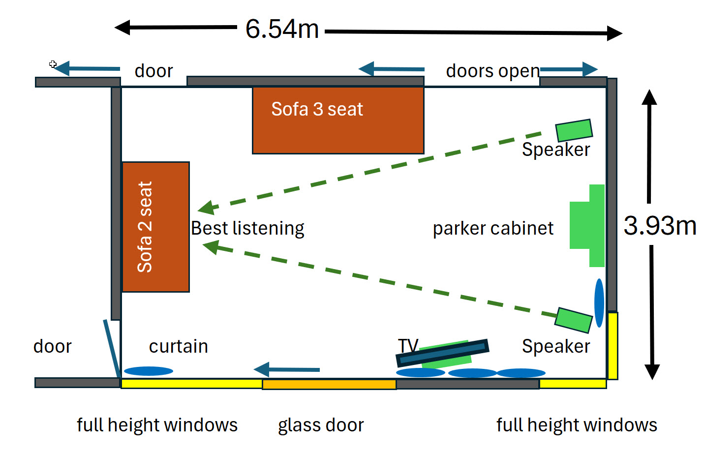

Objectives
Site Objective
- To document the thinking process behind my amplifier system design
- To let others access this so they can help my design if they so wish
- Let others know how I've been thinking - whether this might help them I don't yet know.
Amplifier Objective
To restore the musicality I experienced from the 100W amplifier (now no longer operating) that my neighbour designed and built for me years ago, specifically tailored to my VAF i91 speakers.
To surpass the fall-back amplifier that I am currently using, my Exposure Super XV (40W).


Key objectives and constraints:
- Preamp (Mezmerize) plus power amp(s)
- Approach: "if it is worth doing, it is worth doing well"
- Timeline: Goal 12 months but no hard limit.
- Budget: Ample, no hard limit.
- Partner with VAF i91 mk1 loudspeakers and deliver their full potential, as far as practicable. (nominal impedance 6Ω, sensitivity 88 dB/W/m)
- On preamp, provide 3 line inputs, one for my MXN10 streamer (NET), my CD player (CD), and a spare (AUX).
- Build a reliable premium well engineered system, avoiding excessive complexity.
- Professional level finish - low key, unobtrusive.
- Avoid domestic disharmony, fit all HiFi chassis into our Parker HiFi cabinet (space for amps 430mm (h) x 505mm (w) x 450mm (d) - open back so ample depth to wall behind)
- Speakers are close to cabinet (2m cables)
- I like the idea of dual mono if possible, no fixed constraint on how that might be done.
Secondary Objectives
Be compatible with the sorts of upgrades that might happen (though not likely in the short term):
- SEAS-NEXTEL-2F speakers (semi-active or passive). Impedance: 4-8 Ohms, Sensitivity: 88 dB/W/m
- Upgrade my streamer (MXN10), possibly to something that supports Dirac live room correction such as a Bluesound Node Icon
Neither of these are likely to change the power amplifier needs, but a second output pair on the preamp might be needed.
Personal Objectives
Now that I am retired, this project lets me engage again with the technical thinking that has always felt satisfying. Whilst I have an engineering background, it isn't in electronics, so this project will give me a challenge.
Why the Wolverine Topology
- My VAF i91 speakers are said to benefit from an amplifier that maintains composure and grip.
- The Wolverine amplifier combines technical excellence with musicality so should be able to deliver that.
Why the Mezmerize B1 Buffer Pre‑Amplifier
- The Mezmerize B1 TYA (ten years after) delivers a clean signal with good impedance behaviour
- It is expected to complement the Wolverines.